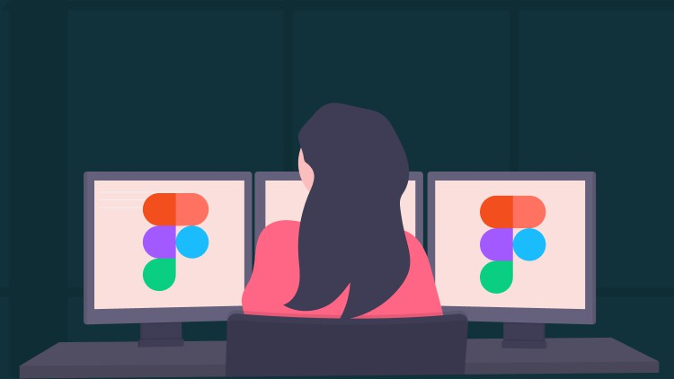
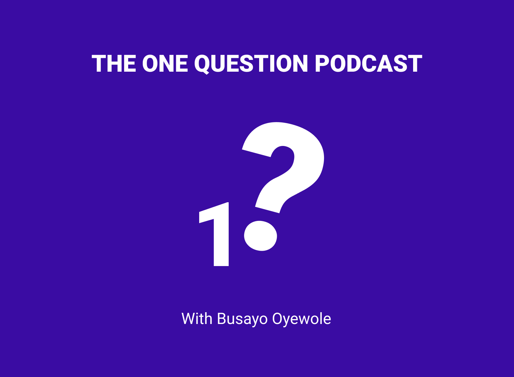

Some design related articles
- Making Accessibility the Default
- How visually impaired people navigate the web
- A designer's guide to git
- How to efficiently use Figma community resources
- How to navigate your entry-level UX job
- Why you should write semantic HTML
Some extracurriculars
- A beginner's guide to figma
In this Udemy course, I teach people new to UI design about how to bring their ideas to life using Figma
- The ONE question podcast
Lighthearted and fun, I ask some impressive people just one question
- Millennialpoets
I founded this publication and curate poetry from Millenials around the world